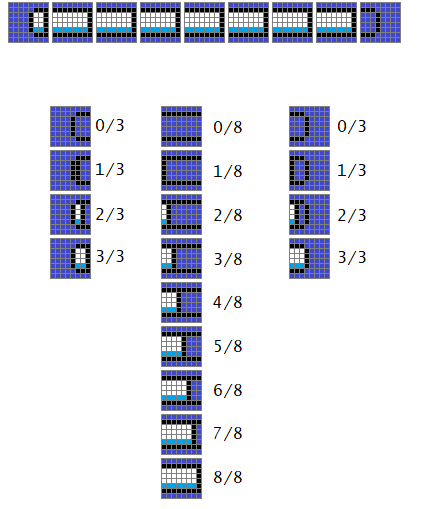
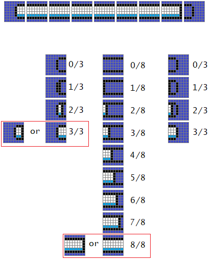
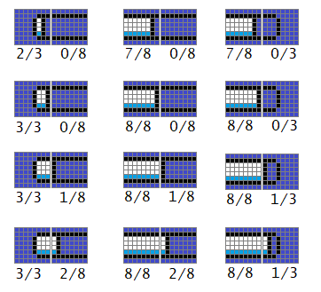

Perhaps you wanted a bar that have an outline around the filled region of the bar to avoid “cutoff”. You could have the bar be like this if you don't want to check adjacent tile bytes:

However, you would have outlines in places you don't need to. So how do we have outline only where the fill ends at? Well, if we consider looking at this image, you'll have a hint on how to do so:

We can determine which 2 full tiles to use based on the next neighboring tile, because:

Therefore, to determine should Current_Tile have an outline, if the Next_Tile fill amount is at least a value of 1, then Current_Tile shouldn't have an outline.